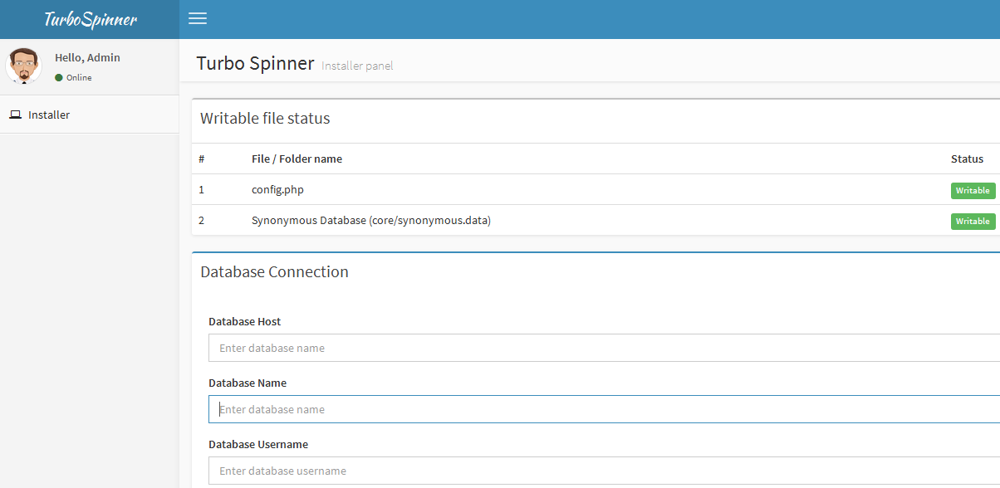

Thank you for purchasing. If you have any questions that are beyond the scope of this help file, please feel free to email via my user page contact form here. Thanks so much!
Developed by Balaji and Admin panel theme by Almsaeedstudio.com
Simple Responsive Template by Prowebdesign.ro
1. Upload files in Upload folder to your website using ftp or file manager in your hosting's control panel & chmod 777 for core/synonymous.data file and config.php
2. Create MySQL database in your hosting account.
3. Visit the index.php page in your web browser where you have upload the files e.g. http://www.example.com/turbospinner/index.php
4. It automatically redirect to installation panel page.
5. Provide the necessary information i.e. database-host, database-name, database-username and database-password
6. Click Submit, you will be shown success message. Then enter your admin user id and password.
7. Now click Install button, after few seconds (mostly 5 to 10 sec) you will be shown success message.
8. Then goto your admin control panel e.g. http://www.example.com/turbospinner/admin
9. Now enter your site infomration such as title, description, keywords etc..
10. Click save and your website is now ready. Just check a few domains for testing purpose and check the support section if you need help for anything.

Compatible up to PHP 7.4 Database Updated Updated Spin Class Code Clean Up
Now compatible with PHP 7.2 & PHP 7.3 Updated: Improved Installer Fixed: Image Verification Errors Fixed: Some minor bugs
Updated: Spin Class Code Clean Up
Added: Support for PHP 7 Added: Complete UTF-8 support (All Unicode characters & any language is supported now) Updated: CKEditor (Page Editor) Updated: Improved Spin Class Updated: Fixed uppercase issue Fixed some minor bugs
Added: Background Pattern Added: Article can't loss while Wrong Image Verification Bug Fix: Image Verification Angles Code Clean Up
Bug Fix: HTML Output can't be displayed Bug Fix: Some spin class errors
Improved UTF8 Support on Spin Class Database are updated with more words! Bug Fix: Image Verification Angles Bug Fix: Minor security fixes Code Clean Up
Improved Spin Class Algorithm Improved to support special characters Bug Fix: Few tables not created while installing Bug Fix: Unable to disable image verification Bug Fix: Unable to add, new synonyms words Bug Fix: Minor security fixes
Spintax Support 6 languages Support [English, Dutch, French, Spanish, Germany, Turkish] Level 1 English Database (Optional) Available only on request New API Credit Checker Possible to limit the homepage spin per guest user (Visitors) Multiple language support for API Access Bug Fix: API key : expired date problem Bug Fix: Uppercase problem And minor bug fixes
initial release
Almsaeedstudio.com for open source admin panel theme.
Prowebdesign.ro for open source simple responsive template.
Copyright © 2021 by Rainbow Networks. All right reserved.